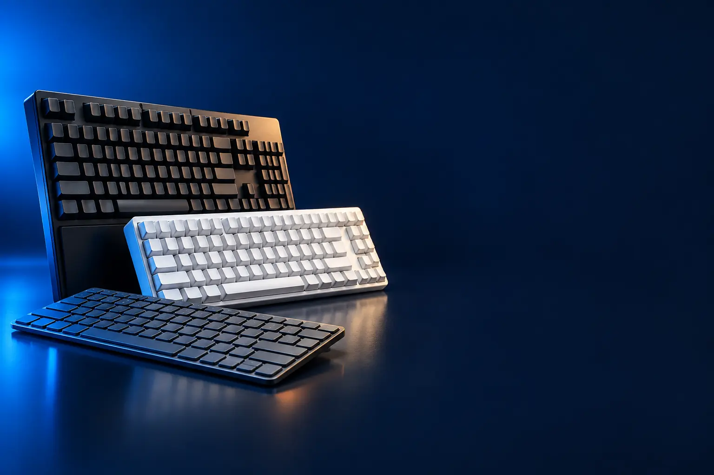

TRABALHO E ESCRITÓRIO
Melhor teclado custo-benefício para trabalho e escritório
Com fio ou sem fio, confortável e silencioso para digitar o dia todo.

Melhor custo-benefício em tecladoLogitech K270
CURADORIA TECHAPROVADO · 2026
Teclado é o que mais tocamos no computador. Separamos 24 modelos em 4 perfis e dizemos para quem cada um vale a pena.

NOSSA LEITURA
Confira se o layout é ABNT2 (com ç) ou US. Depois escolha a conexão (com fio, receptor USB ou Bluetooth) e o tipo de tecla: membrana para silêncio, mecânica para jogos e durabilidade, magnética para jogos competitivos.
COMECE POR AQUI
TRABALHO E ESCRITÓRIO
Com fio ou sem fio, confortável e silencioso para digitar o dia todo.
SEM FIO E BLUETOOTH (VÁRIOS APARELHOS)
Conecta por Bluetooth no notebook, no tablet e no celular, e troca de aparelho com um toque.

GAMER MECÂNICO
Teclas mecânicas, RGB e resposta rápida para jogos.

GAMER MAGNÉTICO (RAPID TRIGGER)
Switch magnético que responde mais rápido: o preferido dos jogos de tiro competitivos.

A FICHA, TRADUZIDA
01 - LAYOUT
ABNT2 é o padrão brasileiro, com tecla ç e acentos no lugar de costume. US Internacional não tem ç dedicado: ele sai com a combinação de acento e c.
Para quem escreve muito em português, ABNT2 é mais prático. Programadores e gamers costumam preferir US.
Confira o layout no anúncio: o mesmo modelo existe nas duas versões.
02 - CONEXÃO
Com fio não tem pilha nem atraso. Receptor USB é sem fio e funciona na hora. Bluetooth dispensa a porta USB e conecta em tablet, celular e smart TV.
Easy-Switch e multi-dispositivo guardam até três aparelhos e alternam com uma tecla: notebook, tablet e celular no mesmo teclado.
Para jogos, prefira cabo ou sem fio de baixa latência (2,4 GHz), não Bluetooth.
03 - SWITCH
Membrana é silenciosa e barata. Mecânico tem uma chave por tecla: mais precisão, durabilidade e sensação marcada. Óptico aciona por luz e é ainda mais rápido.
Switch azul é clicado e barulhento; marrom é tátil e moderado; vermelho é linear e suave.
Hot-swap permite trocar os switches sem solda, para experimentar outros.
04 - MAGNÉTICO
O switch magnético (Hall Effect) mede com um ímã o quanto a tecla desceu. Assim, você escolhe em que profundidade ela aciona, de um toque leve a um aperto fundo.
Rapid Trigger solta a tecla assim que o dedo começa a subir. Em jogos de tiro, isso deixa as paradas e trocas de direção mais rápidas.
Para digitar e jogar casualmente, um mecânico comum resolve. O magnético faz diferença no competitivo.
05 - FORMATO
Completo tem teclado numérico. TKL tira o numérico. 75% e 65% são ainda menores, e o 60% tira também as setas.
Quem usa muitas planilhas sente falta do numérico. Para jogar, formatos menores deixam mais espaço para o mouse.
Teclados ergonômicos, ondulados ou divididos, deixam pulsos e mãos numa posição mais natural.
A CURADORIA EM DETALHE
24 modelos da pesquisa
PERFIL · 6 MODELOS, DA ENTRADA AO TOP DE LINHA
Para trabalhar, o teclado precisa ser confortável, silencioso e ter teclado numérico. Os degraus acima trazem conexão sem fio, apoio para as mãos, formato ergonômico e teclas iluminadas.

TRABALHO · ENTRADA 1 de 6
Com fio USB · resistente a respingos · ABNT2
Ver preço na AmazonPOR DENTRO DA ESCOLHA
Teclado com fio USB, de teclas baixas e silenciosas, design fino resistente a respingos, barra de espaço curva e tamanho completo com teclado numérico.
O teclado mais avaliado da lista: 6,7 mil avaliações e nota 4,8.
| Conexão | Com fio USB |
|---|---|
| Layout | ABNT2 |
| Formato | Completo |
Fonte: ficha e descrição do anúncio, conferidas em 03/11/2026. Dados informados pelo fabricante. Nota e número de avaliações são de compradores, não teste do TechAprovado.
TRABALHO · CUSTO-BENEFÍCIO 2 de 6
Melhor custo-benefício em teclado
Sem fio USB · 8 teclas multimídia · ABNT2
Ver preço na AmazonPOR DENTRO DA ESCOLHA
Teclado sem fio de tamanho completo com receptor USB Unifying, 8 teclas de atalho multimídia, layout ABNT2 (com ç) e pilhas que duram anos.
O sem fio mais confiável da faixa de entrada, vendido pela Amazon.
| Conexão | Receptor USB |
|---|---|
| Layout | ABNT2 |
| Formato | Completo |
Fonte: ficha e descrição do anúncio, conferidas em 03/11/2026. Dados informados pelo fabricante. Nota e número de avaliações são de compradores, não teste do TechAprovado.

TRABALHO · INTERMEDIÁRIO 3 de 6
Apoio para as mãos · Bluetooth ou receptor · atalhos
Ver preço na AmazonPOR DENTRO DA ESCOLHA
Teclado de tamanho completo com apoio confortável para as mãos integrado, teclas de atalho e conexão por Bluetooth LE ou receptor.
O apoio de mãos integrado reduz o cansaço em longas horas.
| Conexão | Bluetooth ou receptor |
|---|---|
| Layout | US Internacional |
| Extras | Apoio para as mãos |
Fonte: ficha e descrição do anúncio, conferidas em 03/11/2026. Dados informados pelo fabricante. Nota e número de avaliações são de compradores, não teste do TechAprovado.

TRABALHO · AVANÇADO 4 de 6
Ergonômico ondulado · apoio acolchoado · Bluetooth
Ver preço na AmazonPOR DENTRO DA ESCOLHA
Teclado ergonômico com design ondulado que deixa mãos e pulsos numa posição mais natural, apoio acolchoado com espuma viscoelástica e conexão por Bluetooth ou receptor.
Ergonomia sem a curva de aprendizado de um teclado dividido.
| Conexão | Bluetooth ou receptor |
|---|---|
| Formato | Ergonômico ondulado |
Fonte: ficha e descrição do anúncio, conferidas em 03/11/2026. Dados informados pelo fabricante. Nota e número de avaliações são de compradores, não teste do TechAprovado.

TRABALHO · ALTERNATIVA 5 de 6
Outro caminho: ergonômico dividido
Dividido e curvo · apoio de pulso · inclinação negativa
Ver preço na AmazonPOR DENTRO DA ESCOLHA
Teclado ergonômico dividido e curvo, com apoio de pulso que dá 54% mais suporte, teclas PerfectStroke e pés que inclinam o teclado para baixo, aliviando os pulsos.
O nível acima do Wave Keys em ergonomia: a divisão abre os braços na largura dos ombros.
| Conexão | Bluetooth ou receptor |
|---|---|
| Formato | Dividido e curvo |
| Extras | Apoio de pulso |
Fonte: ficha e descrição do anúncio, conferidas em 03/11/2026. Dados informados pelo fabricante. Nota e número de avaliações são de compradores, não teste do TechAprovado.

TRABALHO · TOP DE LINHA 6 de 6
Top de linha para trabalho
Teclas iluminadas · clique silencioso · atalhos inteligentes
Ver preço na AmazonPOR DENTRO DA ESCOLHA
Teclas esféricas moldadas para a ponta dos dedos, clique silencioso, iluminação que acende quando as mãos se aproximam, teclas programáveis e atalhos inteligentes para automatizar tarefas.
Nota 4,8. É o teclado de referência para produtividade.
| Conexão | Bluetooth ou receptor |
|---|---|
| Iluminação | Inteligente |
| Extras | Teclas programáveis |
Fonte: ficha e descrição do anúncio, conferidas em 03/11/2026. Dados informados pelo fabricante. Nota e número de avaliações são de compradores, não teste do TechAprovado.
PERFIL · 6 MODELOS, DA ENTRADA AO TOP DE LINHA
Os teclados Bluetooth dispensam receptor USB e conectam em notebook, tablet, celular e smart TV. Muitos guardam até três aparelhos e alternam entre eles com uma tecla.

BLUETOOTH · ENTRADA 1 de 6
Bluetooth · ABNT2 · 78 teclas · multimídia
Ver preço na AmazonPOR DENTRO DA ESCOLHA
Teclado Bluetooth compacto de 78 teclas, layout ABNT2 e teclas multimídia.
A forma mais barata de ter um teclado Bluetooth com ç.
| Conexão | Bluetooth 3.0 |
|---|---|
| Layout | ABNT2 |
| Aparelhos | 1 |
Fonte: ficha e descrição do anúncio, conferidas em 03/11/2026. Dados informados pelo fabricante. Nota e número de avaliações são de compradores, não teste do TechAprovado.

BLUETOOTH · INTERMEDIÁRIO 2 de 6
Bluetooth · teclado numérico · inclinação ajustável
Ver preço na AmazonPOR DENTRO DA ESCOLHA
Teclado Bluetooth compacto com teclado numérico, teclas de perfil profundo, inclinação ajustável e conexão em segundos, sem receptor.
Bluetooth da Logitech com teclado numérico pelo preço de um básico.
| Conexão | Bluetooth |
|---|---|
| Formato | Compacto com numérico |
| Aparelhos | 1 |
Fonte: ficha e descrição do anúncio, conferidas em 03/11/2026. Dados informados pelo fabricante. Nota e número de avaliações são de compradores, não teste do TechAprovado.
BLUETOOTH · CUSTO-BENEFÍCIO 3 de 6
Melhor custo-benefício Bluetooth
Bluetooth · 3 aparelhos · slim e compacto
Ver preço na AmazonPOR DENTRO DA ESCOLHA
Teclado slim e compacto com Bluetooth Easy-Switch para alternar entre até três aparelhos (PC, Mac, tablet, celular) com um toque.
O teclado Bluetooth mais avaliado da loja: mais de 5 mil avaliações.
| Conexão | Bluetooth |
|---|---|
| Formato | Compacto |
| Aparelhos | Até 3 |
Fonte: ficha e descrição do anúncio, conferidas em 03/11/2026. Dados informados pelo fabricante. Nota e número de avaliações são de compradores, não teste do TechAprovado.

BLUETOOTH · AVANÇADO 4 de 6
Tamanho completo · 3 aparelhos · digitação silenciosa
Ver preço na AmazonPOR DENTRO DA ESCOLHA
Teclado Bluetooth de tamanho normal e design fino, com Easy-Switch para até 3 aparelhos (computador, celular e tablet), digitação silenciosa e teclas personalizáveis no Logi Options+.
O degrau sobre o K380s é o tamanho completo com numérico, mantendo os 3 aparelhos.
| Conexão | Bluetooth |
|---|---|
| Formato | Completo, slim |
| Aparelhos | Até 3 |
Fonte: ficha e descrição do anúncio, conferidas em 03/11/2026. Dados informados pelo fabricante. Nota e número de avaliações são de compradores, não teste do TechAprovado.

BLUETOOTH · ALTERNATIVA 5 de 6
Outro caminho: para tablet, com capa
Ultraportátil · capa integrada · iPad, iPhone, Mac e Windows
Ver preço na AmazonPOR DENTRO DA ESCOLHA
Teclado Bluetooth super slim e leve, com capa integrada que protege as teclas na bolsa e teclas bem espaçadas para digitar com conforto. Funciona com iPad, iPhone, Mac e Windows.
A capa integrada é o diferencial: vai na bolsa sem estragar.
| Conexão | Bluetooth |
|---|---|
| Formato | Ultraportátil com capa |
Fonte: ficha e descrição do anúncio, conferidas em 03/11/2026. Dados informados pelo fabricante. Nota e número de avaliações são de compradores, não teste do TechAprovado.

BLUETOOTH · TOP DE LINHA 6 de 6
Top de linha Bluetooth
Compacto · teclas iluminadas · 3 aparelhos · USB-C
Ver preço na AmazonPOR DENTRO DA ESCOLHA
A versão compacta do MX Keys: teclas moldadas para a ponta dos dedos, iluminação inteligente que acende quando as mãos se aproximam, Easy-Switch para até 3 aparelhos e bateria recarregável.
Mais de 2,4 mil avaliações. O topo dos compactos para trabalho.
| Conexão | Bluetooth ou receptor |
|---|---|
| Formato | Compacto |
| Aparelhos | Até 3 |
Fonte: ficha e descrição do anúncio, conferidas em 03/11/2026. Dados informados pelo fabricante. Nota e número de avaliações são de compradores, não teste do TechAprovado.
PERFIL · 6 MODELOS, DA ENTRADA AO TOP DE LINHA
Teclados gamer usam switches mecânicos ou ópticos, que respondem mais rápido e duram mais que os de membrana. Os formatos compactos (60%, 75%, TKL) deixam mais espaço para o mouse.

GAMER · ENTRADA 1 de 6
Mecânico 60% · switch marrom · RGB
Ver preço na AmazonPOR DENTRO DA ESCOLHA
Teclado mecânico compacto 60%, com switch marrom (tátil e mais silencioso que o azul) e iluminação RGB, que deixa o máximo de espaço para o mouse.
Nota 4,8 em mais de mil avaliações pelo preço de um teclado de membrana.
| Switch | Mecânico marrom |
|---|---|
| Formato | 60% |
| Conexão | Com fio |
Fonte: ficha e descrição do anúncio, conferidas em 03/11/2026. Dados informados pelo fabricante. Nota e número de avaliações são de compradores, não teste do TechAprovado.
GAMER · CUSTO-BENEFÍCIO 2 de 6
Melhor custo-benefício gamer
Mecânico 75% · switch azul · iluminação Rainbow
Ver preço na AmazonPOR DENTRO DA ESCOLHA
Teclado mecânico gamer com switch azul, de clique marcado, e iluminação Rainbow.
Mais de 2,1 mil avaliações e nota 4,8.
| Switch | Mecânico azul |
|---|---|
| Conexão | Com fio |
Fonte: ficha e descrição do anúncio, conferidas em 03/11/2026. Dados informados pelo fabricante. Nota e número de avaliações são de compradores, não teste do TechAprovado.

GAMER · INTERMEDIÁRIO 3 de 6
75% · sem fio (3 modos) · hot-swap · som macio
Ver preço na AmazonPOR DENTRO DA ESCOLHA
Teclado mecânico 75% sem fio com três modos (Bluetooth, 2,4 GHz e USB-C), switches pré-lubrificados trocáveis sem solda (hot-swap) e estrutura com espumas que deixam o som macio.
Um dos teclados entusiastas mais populares: mais de 1,2 mil avaliações.
| Switch | Mecânico, hot-swap |
|---|---|
| Formato | 75% |
| Conexão | Bluetooth, 2,4 GHz, USB-C |
Fonte: ficha e descrição do anúncio, conferidas em 03/11/2026. Dados informados pelo fabricante. Nota e número de avaliações são de compradores, não teste do TechAprovado.

GAMER · AVANÇADO 4 de 6
Sem fio · perfil baixo · switch tátil · 36 h
Ver preço na AmazonPOR DENTRO DA ESCOLHA
Teclado mecânico gamer TKL de perfil baixo, sem fio LIGHTSPEED ou Bluetooth, switches táteis de baixo perfil, RGB LIGHTSYNC e até 36 horas de bateria.
Sem fio LIGHTSPEED com latência de cabo, de uma marca gamer de referência.
| Switch | Mecânico tátil, baixo perfil |
|---|---|
| Formato | TKL |
| Conexão | LIGHTSPEED ou Bluetooth |
Fonte: ficha e descrição do anúncio, conferidas em 03/11/2026. Dados informados pelo fabricante. Nota e número de avaliações são de compradores, não teste do TechAprovado.

GAMER · ALTERNATIVA 5 de 6
Outro caminho: switch óptico
60% · switch óptico vermelho · Chroma RGB
Ver preço na AmazonPOR DENTRO DA ESCOLHA
Teclado 60% com switches ópticos vermelhos, que acionam por luz em vez de contato metálico, com toque suave e silencioso, e iluminação Razer Chroma.
Quase 6 mil avaliações. O switch óptico é rápido e dura mais.
| Switch | Óptico vermelho |
|---|---|
| Formato | 60% |
| Conexão | Com fio |
Fonte: ficha e descrição do anúncio, conferidas em 03/11/2026. Dados informados pelo fabricante. Nota e número de avaliações são de compradores, não teste do TechAprovado.

GAMER · TOP DE LINHA 6 de 6
Top de linha gamer
Sem fio · TKL · modo jogo · desenvolvido com profissionais
Ver preço na AmazonPOR DENTRO DA ESCOLHA
Teclado gamer TKL desenvolvido com jogadores profissionais, com sem fio LIGHTSPEED, que conecta mouse compatível no mesmo receptor, RGB LIGHTSYNC e controles de modo jogo.
O topo da linha de teclados gamer da Logitech.
| Switch | Mecânico |
|---|---|
| Formato | TKL |
| Conexão | LIGHTSPEED |
Fonte: ficha e descrição do anúncio, conferidas em 03/11/2026. Dados informados pelo fabricante. Nota e número de avaliações são de compradores, não teste do TechAprovado.
PERFIL · 6 MODELOS, DA ENTRADA AO TOP DE LINHA
Os teclados magnéticos (Hall Effect) medem a profundidade da tecla com ímãs. Com isso, ajustam o ponto de acionamento e têm Rapid Trigger, que solta a tecla na hora em que você levanta o dedo. Fazem diferença em jogos de tiro competitivos.
MAGNÉTICO · CUSTO-BENEFÍCIO 1 de 6
Melhor custo-benefício magnético
Magnético 60% · Rapid Trigger 0,01 mm · 8K Hz
Ver preço na AmazonPOR DENTRO DA ESCOLHA
Teclado magnético 60% com Rapid Trigger de 0,01 mm, acionamento ajustável de 0,1 mm a 3,4 mm, taxa de 8.000 Hz e recursos como Dynamic Keystrokes, Toggle Key e Snap Key.
O magnético mais avaliado da faixa de entrada, vendido pela Amazon.
| Switch | Magnético |
|---|---|
| Formato | 60% |
| Taxa | 8.000 Hz |
Fonte: ficha e descrição do anúncio, conferidas em 03/11/2026. Dados informados pelo fabricante. Nota e número de avaliações são de compradores, não teste do TechAprovado.

MAGNÉTICO · ALTERNATIVA 2 de 6
Outro caminho: magnético com ç
Magnético 65% · Rapid Trigger · 8K Hz · ABNT2
Ver preço na AmazonPOR DENTRO DA ESCOLHA
Teclado magnético 65% com layout ABNT2 (com ç), Rapid Trigger, taxa de até 8.000 Hz e RGB por tecla.
É o magnético com layout brasileiro da lista.
| Switch | Magnético |
|---|---|
| Formato | 65%, ABNT2 |
| Taxa | 8.000 Hz |
Fonte: ficha e descrição do anúncio, conferidas em 03/11/2026. Dados informados pelo fabricante. Nota e número de avaliações são de compradores, não teste do TechAprovado.

MAGNÉTICO · INTERMEDIÁRIO 3 de 6
Hall Effect · Rapid Trigger 0,02 mm · 8K Hz · 65%
Ver preço na AmazonPOR DENTRO DA ESCOLHA
Teclado 65% com switches magnéticos Graywood (Hall Effect), Rapid Trigger de 0,02 mm, taxa de 8.000 Hz e recursos SOCD e Snap Tap para jogos competitivos.
Mais de 900 avaliações. O 65% acrescenta as setas que faltam no 60%.
| Switch | Magnético (Hall Effect) |
|---|---|
| Formato | 65% |
| Taxa | 8.000 Hz |
Fonte: ficha e descrição do anúncio, conferidas em 03/11/2026. Dados informados pelo fabricante. Nota e número de avaliações são de compradores, não teste do TechAprovado.

MAGNÉTICO · ALTERNATIVA 4 de 6
Outro caminho: com teclado numérico
Magnético · tamanho completo · Rapid Trigger · 8K Hz
Ver preço na AmazonPOR DENTRO DA ESCOLHA
Teclado magnético de tamanho completo, com teclado numérico, taxa de até 8.000 Hz, Rapid Trigger, PRCS SOCD e RGB por tecla.
Raro: magnético com numérico por preço de entrada.
| Switch | Magnético |
|---|---|
| Formato | Completo |
| Taxa | 8.000 Hz |
Fonte: ficha e descrição do anúncio, conferidas em 03/11/2026. Dados informados pelo fabricante. Nota e número de avaliações são de compradores, não teste do TechAprovado.

MAGNÉTICO · AVANÇADO 5 de 6
Hall Effect 75% · Rapid Trigger 0,02 mm · 8K Hz
Ver preço na AmazonPOR DENTRO DA ESCOLHA
Teclado magnético 75% com Rapid Trigger de 0,02 mm sem zona morta, taxa de 8.000 Hz e varredura de 32.000 Hz.
O formato 75% junta as teclas de função ao magnético.
| Switch | Magnético (Hall Effect) |
|---|---|
| Formato | 75% |
| Taxa | 8.000 Hz |
Fonte: ficha e descrição do anúncio, conferidas em 03/11/2026. Dados informados pelo fabricante. Nota e número de avaliações são de compradores, não teste do TechAprovado.

MAGNÉTICO · TOP DE LINHA 6 de 6
Top de linha magnético
Magnético · Rapid Trigger · TKL · nível PRO
Ver preço na AmazonPOR DENTRO DA ESCOLHA
Teclado gamer com fio TKL de switches magnéticos, modo Rapid Trigger e ponto de acionamento ajustável, da linha PRO da Logitech.
Nota 4,8. É a referência da Logitech para jogos competitivos.
| Switch | Magnético |
|---|---|
| Formato | TKL |
| Conexão | Com fio |
Fonte: ficha e descrição do anúncio, conferidas em 03/11/2026. Dados informados pelo fabricante. Nota e número de avaliações são de compradores, não teste do TechAprovado.
Nenhum modelo encontrado. Tente outro termo ou volte para Todos.
LADO A LADO
| Modelo | Perfil | Posição | Conexão | Destaque | Nota (avaliações) |
|---|---|---|---|---|---|
| Logitech K120 (com fio) | Trabalho | Entrada | Com fio USB | Com fio USB · resistente a respingos · ABNT2 | 4,8 (6,7 mil) |
| Logitech K270 | Trabalho | Custo-benefício | Receptor USB | Sem fio USB · 8 teclas multimídia · ABNT2 | 4,7 (3,4 mil) |
| Logitech Signature K650 | Trabalho | Intermediário | Bluetooth ou receptor | Apoio para as mãos · Bluetooth ou receptor · atalhos | 4,6 (942) |
| Logitech Wave Keys | Trabalho | Avançado | Bluetooth ou receptor | Ergonômico ondulado · apoio acolchoado · Bluetooth | 4,6 (868) |
| Logitech ERGO K860 | Trabalho | Alternativa | Bluetooth ou receptor | Dividido e curvo · apoio de pulso · inclinação negativa | 4,6 (719) |
| Logitech MX Keys S | Trabalho | Top de linha | Bluetooth ou receptor | Teclas iluminadas · clique silencioso · atalhos inteligentes | 4,8 (2 mil) |
| VINIK Dynamic Smart DT200 | Bluetooth | Entrada | Bluetooth 3.0 | Bluetooth · ABNT2 · 78 teclas · multimídia | 4,5 (442) |
| Logitech K250 Bluetooth | Bluetooth | Intermediário | Bluetooth | Bluetooth · teclado numérico · inclinação ajustável | 4,7 (254) |
| Logitech Pebble Keys 2 K380s | Bluetooth | Custo-benefício | Bluetooth | Bluetooth · 3 aparelhos · slim e compacto | 4,7 (5,2 mil) |
| Logitech Signature Slim K950 | Bluetooth | Avançado | Bluetooth | Tamanho completo · 3 aparelhos · digitação silenciosa | 4,7 (365) |
| Logitech Keys-To-Go 2 | Bluetooth | Alternativa | Bluetooth | Ultraportátil · capa integrada · iPad, iPhone, Mac e Windows | 4,6 (501) |
| Logitech MX Keys Mini | Bluetooth | Top de linha | Bluetooth ou receptor | Compacto · teclas iluminadas · 3 aparelhos · USB-C | 4,7 (2,5 mil) |
| Redragon Fizz K617 (Brown) | Gamer | Entrada | Com fio | Mecânico 60% · switch marrom · RGB | 4,8 (1,2 mil) |
| Redragon Dark Avenger K568 | Gamer | Custo-benefício | Com fio | Mecânico 75% · switch azul · iluminação Rainbow | 4,8 (2,2 mil) |
| AULA F75 | Gamer | Intermediário | Bluetooth, 2,4 GHz, USB-C | 75% · sem fio (3 modos) · hot-swap · som macio | 4,7 (1,2 mil) |
| Logitech G515 LIGHTSPEED TKL | Gamer | Avançado | LIGHTSPEED ou Bluetooth | Sem fio · perfil baixo · switch tátil · 36 h | 4,8 (653) |
| Razer Huntsman Mini | Gamer | Alternativa | Com fio | 60% · switch óptico vermelho · Chroma RGB | 4,6 (5,9 mil) |
| Logitech G PRO X TKL LIGHTSPEED | Gamer | Top de linha | LIGHTSPEED | Sem fio · TKL · modo jogo · desenvolvido com profissionais | 4,8 (418) |
| Monsgeek Fun60 Pro | Magnético | Custo-benefício | Magnético 60% · Rapid Trigger 0,01 mm · 8K Hz | 4,7 (827) | |
| Redragon Nova (ABNT2) | Magnético | Alternativa | Magnético 65% · Rapid Trigger · 8K Hz · ABNT2 | 4,9 (41) | |
| AULA WIN68 HE | Magnético | Intermediário | Hall Effect · Rapid Trigger 0,02 mm · 8K Hz · 65% | 4,5 (917) | |
| Redragon Dharma K556 (magnético) | Magnético | Alternativa | Magnético · tamanho completo · Rapid Trigger · 8K Hz | 4,7 (94) | |
| EPOMAKER HE80 | Magnético | Avançado | Hall Effect 75% · Rapid Trigger 0,02 mm · 8K Hz | 4,5 (328) | |
| Logitech G PRO X TKL RAPID | Magnético | Top de linha | Com fio | Magnético · Rapid Trigger · TKL · nível PRO | 4,8 (383) |
CONSIDERAÇÕES FINAIS
Teclados ergonômicos importados pela Amazon Global ficaram de fora. Os kits de teclado e mouse estão no guia de kit teclado e mouse.
O Logitech K270 para trabalho, o Pebble Keys 2 K380s para Bluetooth e o Redragon Dark Avenger K568 para jogos.
O Logitech Pebble Keys 2 K380s: compacto, para até 3 aparelhos e com mais de 5 mil avaliações.
Para jogos e para quem digita muito, sim: é mais preciso e dura mais.
Para jogos de tiro competitivos, sim. Para o resto, um mecânico comum resolve.
ABNT2 para quem escreve muito em português; US para programação e jogos.
Porque ele muda várias vezes por dia. O botão leva ao valor atualizado na loja.
TRANSPARÊNCIA EDITORIAL
Separamos os teclados pelo uso principal e montamos uma escada de preço em cada perfil. Cada modelo precisa responder com clareza "para quem ele é o certo".
Em cada perfil há modelos em faixas de preço diferentes, e cada degrau precisa entregar algo que o anterior não entrega. Dois modelos com a mesma proposta não entram juntos.
Ficha, nota e número de avaliações foram conferidos nos anúncios das lojas em 03/11/2026. As avaliações são de compradores, não teste nosso.
Os links de compra desta página são de afiliado: se você comprar por eles, o TechAprovado pode ganhar uma comissão, sem custo adicional para você. Isso não muda a ordem nem a escolha dos produtos.
📲 GUIAS E DICAS NO SEU FEED
Dicas práticas antes de comprar, em carrosséis e vídeos curtos, sempre com link para o guia completo.